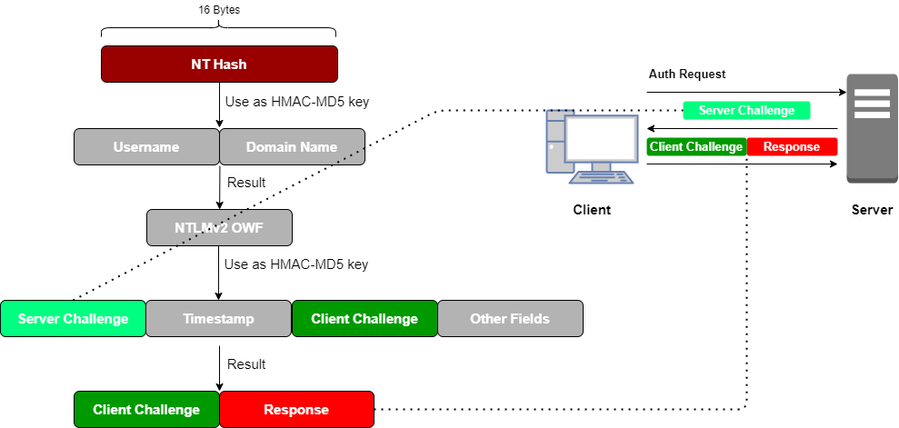

NTLMv2 Challenge/Response
NTLMv2 was developed as a response to password cracking
tools released in the late 1990s, including L0phtCrack.
It is a more sophisticated form of authentication than
NTLMv1 and is more difficult to crack.
Cracking sniffed NTLMv2 challenge/response exchanges is still
possible, but it tends to be considerably slower than LANMAN Challenge/Response or NTLMv1 Challenge/Response sniffed
from the network.
Although NTLM has been replaced by Kerberos, it is still widely used and supported in
Windows machines.
it is still used when the client that is authenticating to a server:
◇ use IP address
of the Target instead of a SPN (Service Principals Names) for authentication
◇ does not belong to the same
domain.
◇ is NOT a Windows system
Because of the above implementations, NTLMv2 is rarely fully disabled
in corporate environments.
View
Image1. Client makes an authentication with the Server
2.
Server sends
Server Challenge3. Client formulates a
response:
1) The NTLMv2 challenge/response algorithm is based on a
user's NT
hash stored in the SAM database.
2) The
user's NT hash, it
is used
as a key in the keyed hash algorithm HMAC- MD5 to hash the
pair <USERNAME,DomainName>
While USERNAME is upper case, the DomainName that is the Server is case
sensitive
4) This result (the <USERNAME,DomainName> name hashed with the
user's NT hash) is also called
NTLMv2 One-Way
Function (OWF) 5) NTLMv2 One-Way Function (OWF) is then used as a key in the next round round of
HMAC-MD5 hashing,
OWF is applied to the
Server Challenge + Timestamp +
Client Challenge (generated in a pseudorandom fashion) + some Other Fields
(which are not documented in detail by Microsoft).
6) The result is called the
NTLMv2 response, which is sent to the server along with the
Client Challenge.
Cracking NTLMv2 requires sniffing the
Server Challenge and the
Client Challenge+
NTLMv2 Response Clearly because this is a more sophisticated form of
authentication there is a lot more cryptographic work in cracking NTLMv2 challenge/response than the NTLMv1
challenge/response.
Bibliography:
•
https://www.sans.org/blog/protecting-privileged-domain-accounts-network-authentication-in-depth/•
https://www.giac.org/paper/gsec/2507/securing-legacy-clients-windows-environment-transitioning-windows-2000-active-directory/104346•
https://www.giac.org/paper/gcih/12114/pass-the-hash-attacks-tools-mitigation/119029
{kind=link}